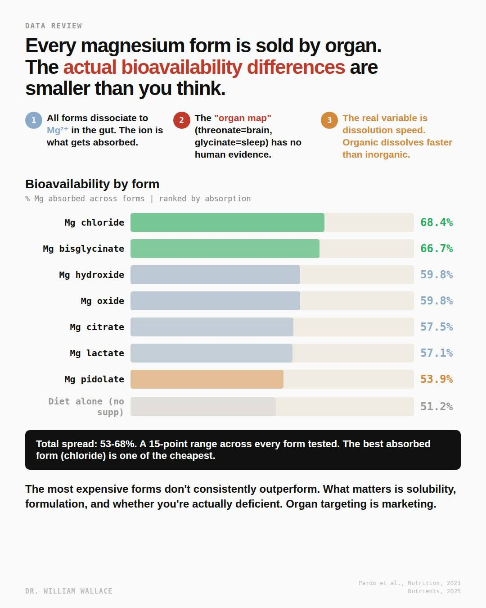

All magnesium forms, even oxide, are absorbed; form-specific marketing is hype
A shared piece argues that every magnesium salt dissociates in stomach acid and Mg2+ is what is absorbed, so threonate-for-brain or taurate-for-heart claims lack human data. Louis says differences between forms are fairly minor.